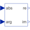

PolarToRectangularConvert polar coordinates to rectangular coordinates |

|
Information
This information is part of the Modelica Standard Library maintained by the Modelica Association.
The input values of this block are the polar components uabs and uarg of a phasor.
This block calculates the components y_re and y_im of the rectangular representation of this phasor.
y_re = u_abs * cos( u_arg ) y_im = u_abs * sin( u_arg )
Connectors (4)
| u_abs |
Type: RealInput Description: Length of polar representation |
|
|---|---|---|
| u_arg |
Type: RealInput Description: Angle of polar representation |
|
| y_re |
Type: RealOutput Description: Real part of rectangular representation |
|
| y_im |
Type: RealOutput Description: Imaginary part of rectangular representation |